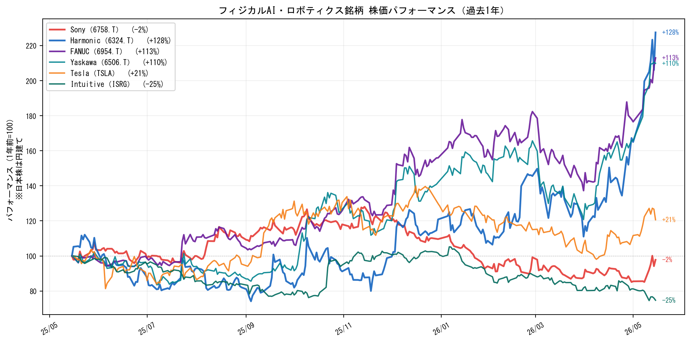

フィジカルAI・ロボティクス：AIが「体」を持つ時代
ソフトウェアとしてのAIは画面の中にある。フィジカルAIは工場の床、手術室、道路の上にある。NVIDIAのジェンセン・フアンが「次の巨大市場はロボティクス」と繰り返し強調するとき、彼はハードウェアの世界全体を指している。
なぜ今、フィジカルAIが投資テーマになるのか
生成AIが言語・画像を扱うソフトウェア領域を制覇しつつある中、次のフロンティアは物理世界との相互作用だ。ヒューマノイドロボット・自動運転・産業用ロボットの高度化、そしてその学習基盤となる「センサーデータ」の重要性が急上昇している。
NVIDIAはIsaac SimとOmniverse platformで、仮想空間でロボットを訓練して現実に転送する「シミュレーション→リアル転送（Sim2Real）」を推進している。これにより、実機のトレーニングコストが劇的に低下し、ヒューマノイドの商業展開が加速する。
市場規模：
| セグメント | 2025年 | 2030年予測 | CAGR |
|---|---|---|---|
| ヒューマノイドロボット | ~$1B | ~$15〜30B | 70%超 |
| 産業用ロボット | ~$25B | ~$55B | 12〜15% |
| 自動運転（L4/L5） | ~$10B | ~$80B | 40〜50% |
| 精密減速機（ロボット関節） | ~$4B | ~$12B | 15〜20% |
フィジカルAIのバリューチェーン
| レイヤー | 内容 | 主な銘柄 |
|---|---|---|
| センサー | カメラ・LiDAR・ToFセンサー | Sony（6758.T） |
| コントローラー | 産業用サーボドライブ・モーション制御 | Yaskawa（6506.T）、FANUC（6954.T） |
| 精密機構 | 関節用精密減速機（Harmonic Drive等） | Harmonic Drive（6324.T） |
| AI学習基盤 | Sim2Realプラットフォーム | NVDA |
| インテグレーター | ロボット+AIシステムの統合 | TSLA（Optimus）、GOOGL（DeepMind） |
主要銘柄マップ
日本株（センサー・精密機構で世界独占）
| 銘柄 | ティッカー | 業界パワー | 概要 | ステータス |
|---|---|---|---|---|
| ソニーグループ | 6758.T（東証） | ★★★★★ | CMOSイメージセンサー世界シェア約50%。スマホ・ロボット・自動運転すべての目 | 検討中（本命） |
| ハーモニック・ドライブ | 6324.T（東証） | ★★★★★ | 精密波動減速機（Strain Wave Gear）の世界独占。ヒューマノイド関節の事実上の標準 | 保有中 |
| 安川電機 | 6506.T（東証） | ★★★★ | 産業用ロボット・サーボモーター世界4強。MOTOMAN製品群がモータースポンサー | ウォッチ |
| FANUC | 6954.T（東証） | ★★★★★ | CNCシステム・産業用ロボット世界トップ。NVIDIA・Google協業発表で注目集中 | 保有中 |
米国株
| 銘柄 | ティッカー | 業界パワー | 概要 | ステータス |
|---|---|---|---|---|
| Tesla | TSLA（NASDAQ） | ★★★★ | OptmusヒューマノイドのSim2Real先駆者。FSD自動運転データ最大保有者 | ウォッチ |
| Intuitive Surgical | ISRG（NASDAQ） | ★★★★★ | 手術支援ロボットの世界独占（da Vinci）。AIによる手術精度向上で参入障壁強化中 | ウォッチ |
株価パフォーマンス（過去1年）
注： 日本株（6758.T・6324.T・6954.T・6506.T）は円建て騰落率。USD換算なし。
ソニー（6758.T）：なぜ本命か
ソニーをフィジカルAIの本命とする理由は1つに集約される：CMOSイメージセンサー世界シェア約50%。
ロボット・自動運転・工場監視カメラ・ドローンの「目」はすべてCMOSセンサーで作られており、その約半数がソニー製だ。フィジカルAIが普及すればするほど、ソニーのセンサー出荷量が増える。しかもカメラ以外の収益柱（PlayStation・エンタメ・半導体受託）が足元を支えており、PERは同等成長企業と比較して明確に割安。
分析ノート：
analysis/physical_ai.ipynbに5銘柄の定量分析あり。
投資まとめ
| 銘柄 | 選択理由 | バケット |
|---|---|---|
| Sony（6758.T） | センサー独占×割安PER。本命 | 運用枠 |
| Harmonic Drive（6324.T） | ヒューマノイド関節の世界標準。好決算後の押し目で購入済み | リスク枠 |
| FANUC（6954.T） | NVIDIA・Google協業モメンタム。購入済み | 運用枠 |
ヒューマノイドが量産フェーズに入る2026〜2027年が最初のリターン検証点。Harmonic Driveは1台あたり複数個の減速機を使用するため、出荷台数に直結する。